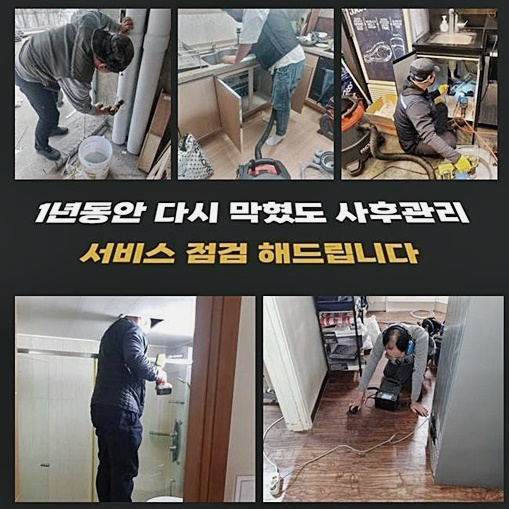
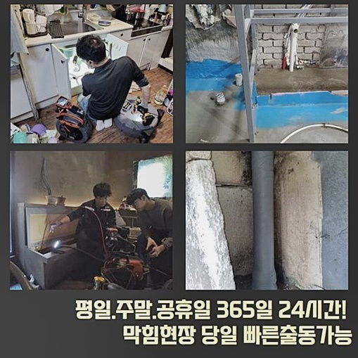
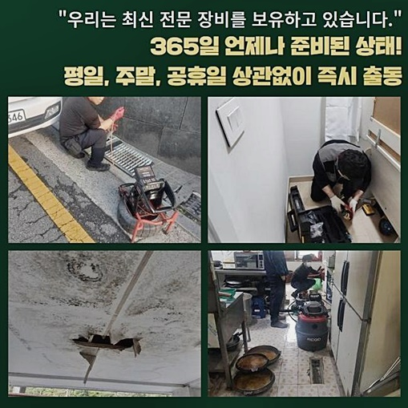
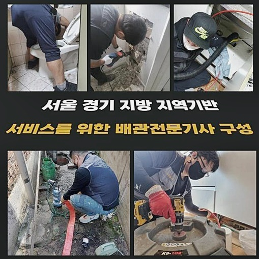
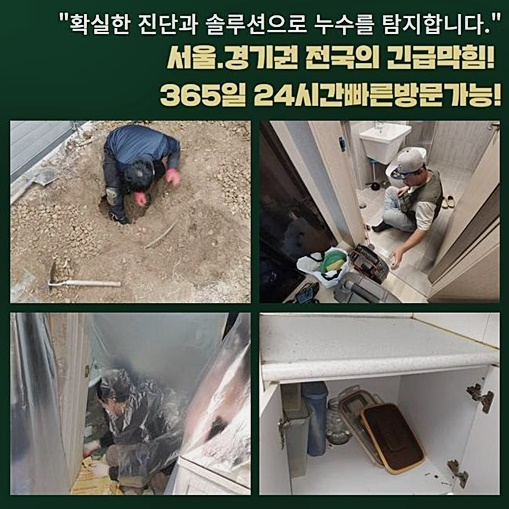
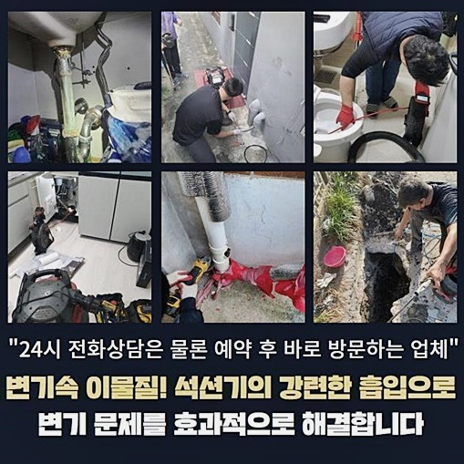
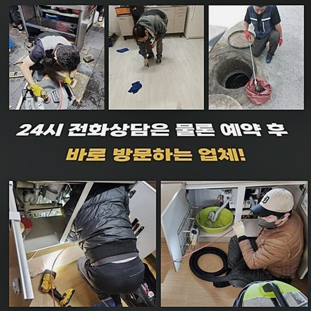

🏠 부천 역곡동싱크대역류 상동 하수구뚫는곳 배관설비공사
용인시 처인구 배관막힘 전문 시공 후기

📋 작업 개요
- 위치: 용인시 처인구, 수원시 영통구, 화성시 동탄
- 서비스 유형: 배관막힘, 고압세척, 내시경점검
- 작업 일시:
- 업체명: 하수구수사대 (010-5615-2118)
🔍 문제 상황
부천 역곡동싱크대역류 상동 하수구뚫는곳 배관설비공사
배수관이 완전히 막혀버렸다면 통상적인 도구로는 처리하기 어려워요
심각한 막힘은 단순하게 힘으로 뚫는 것만으로는 해결이 안되기 때문에 전문화된 대처가 필수입니다
하수관로가 빈틈없이 막히게 되면 물이 일절 흐르지 않아서 가게나 집에서 심각한 문제를 발생시킵니다
그리하여 이런 상황들을 일시에 확실히 수리해 줄 전문팀을 불러온 후 해결하는게 필요합니다
하수도 막힘 상황은 시간이 지체될수록 해결이 어려워질 수 있으므로 정확하고 즉각적인 대응들이 중요합니다
애매하게 대강 뚫었다가는 머지않아 똑같은 상황을 다시 경험 할지 모릅니다
이와같이 반복적인 상황들은 시간과 수리비를 허비하게 하며 이전보다 심각한 상황들을 야기할 수 있어요
이번 사례는 하수관 막힘이 생겼다고 도움을 요청하셨습니다
고객분께서는 하수관 고압청소 요금에 대해 걱정이 많아 문제점을 점검한 후 견적을 드렸습니다
요금 문제는 매우 신중하게 생각하시는 고려대상이기에 저희는 고객님의 예산 한도 내에서 최상의 해결책들을 적용할 수 있도록 힘쓰고 있습니다
기쁘게도 생각한 재정 한도 안에서 수행될 수 있다고 판단하셨기 때문에 시공을 맡기기로 결정하셨어요
배관이 막히게 되는 상황이 생기면 첫째로 어떤 이유로 이런 일들이 생기게 되었는지 점검하여야 합니다
단순하게 표면상의 문제들을 처리하는게 아니라 본질적인 원인을 발견하는 것이 필요합니다
이를 처리하기 위해 어떠한 절차를 시도할 것인지 고민한 뒤 착수해야합니다
현장의 문제요인을 확실히 알아내지 않고 임시적으로 처리하게 된다면 같은 유형의 문제들이 재발할 가능성이 많습니다
이런 땐 막혔다고 확인된 곳만 수리한다고 해서 문제가 없어지는 것이 아니예요

🔎 원인 분석
💡 전문가 진단: 정밀 진단 장비를 사용하여 슬러지의 고착 여부를 판명하고 타격/세척 작업을 실시했습니다.
배수관의 모양과 현상의 근본을 총체적으로 분석한 후 효과적인 방식을 적용해야 합니다
맨 아래층의 냉장보관소와 하수구가 이어진 구조였는데 맨홀 안쪽이 막혀서 이 지점이 역류하여서 난리가 났습니다
역류 문제는 생활에 지장을 발생시키며 또한 불쾌한 환경과 금전적 피해들을 발생시킬 수 있어요
이용자분께 앞뒤 상황에 대해 듣고나서 막힘을 해결할 수 있도록 장치들을 준비했어요
준설 시공차에서 기기를 셋팅하고 가장 낮은층으로 가서 현장을 살펴보았습니다
아무리 바빠도 무엇때문에 그런지 원인을 알고 시작하는 것이 좋습니다
문제점이 발생된 이유를 확실히 이해해야 원활한 해결을 할 수 있습니다
카메라 내시경으로 확인해 본 결과 맨홀 내부에 물이 흐르지 않고 고여있었습니다
이 현상은 어디선가 막혀있다는 것을 암시합니다 물의 흐름이 없다면 물이 꽉 차면서 마침내 역류가 일어납니다
문제는 오수받이가 이곳저곳 있기때문에 막힘이 어디서 생겼는지 파악하기 힘들었습니다
이럴때는 하나하나 문제를 역으로 추적하면서 문제요인을 확인하고 있습니다
이러한 현장에서는 거슬러 올라가면서 고온과 고압의 세척작업으로 막힘을 해소 할 수 있습니다
고온수 고압 세정작업은 강력한 압력으로 배수구 안의 오염물을 제거하는 최적의 방식입니다
준설차에서 준비된 고압 분사기를 활용해 찌꺼기를 제거하는 작업을 진행했어요
온수노즐을 이용하여 강한 물줄기로 오염물질을 갈아내고 세척합니다
역류현상이 일어날만큼 단단하게 막힌 상황이라서 여러번에 걸쳐 작업한들 해결하기가 어려웠습니다
심하게 막힌 불순물은 세찬 수압과 되풀이되는 시도를 통해 세척할 수 있습니다
저희팀은 되풀이되는 시도를 통해 결국에는 오염물질을 분쇄하였습니다

🔧 작업 과정
꾸준한 시도를 통해 마침내 막힌 곳을 해결할 수 있었어요
슬러지와 이물질들이 한가득 배출되었습니다
이런 오염물은 하수도를 대체로 막아버리는 주요한 이유입니다
고객께서 이야기하시는데 건물을 세운 이래로 한 차례도 막힌적이 없었으므로 그렇게 지내왔다고 하셨어요
긴 시간동안 누적된 찌꺼기는 나중에는 심각한 사태를 야기시키게 됩니다
오랜기간 쌓여온 오염물이 모여 역류가 발생했습니다
쌓여있던 불순물과 기름찌꺼기는 배수구의 흐름을 저해하며 결과적으로 하수를 역류시킵니다
수시로 내시경 장치를 이용하여 하수관 작업 경과를 체크하였어요
내시경 장치는 배수구 내의 상황들을 정밀하게 검사할 수 있는 중요한 장비입니다
큰 조각들을 쉽게 제거가 되는데 하수관에 붙어있는 잔여물은 잘못 제거하게 되면 하수관에 부담이 될 수 있으므로 조심히 작업을 진행했습니다
하수관에 데미지를 주면 심각한 손상이 발생할 가능성이 있어 신중을 기해야 합니다
저희 기술자들은 세밀한 처리를 바탕으로 합당한 금액으로 배수관 고압물청소을 실시하고 있어요
세밀한 시공과 합당한 요금으로 소비자의 만족감을 올리는 중요한 요인이예요
두번째 층의 입상배관과 맨 아래층의 배수관을 확인해보니 물티슈가 가득 차 있었습니다
물티슈의 경우 배수구에 중대한 문제를 유발할 수 있는 가장 흔한 요인 중 하나에 속합니다
물티슈는 배수관에 버릴 경우 막히므로 고객님들께 기억해 달라며 요청했습니다
키친타올은 시간이 흘러도 녹지 않기 때문에 배수구를 흔히 막히게 만듭니다
세심한 수리를 마무리 한 후 내시경 장치를 사용해 재차 내부의 모습을 점검했어요
작업완료 후에도 안쪽상황을 검토하는 건 장애가 말끔하게 제거됐는지 체크하는 중대한 프로세스입니다
오염물이 모두 제거되었기 때문에 배수관이 순조롭게 통수되고 있음을 파악하였습니다
하수관이 정상적으로 통수가 되면 이제는 하수가 역류되지 않습니다
의뢰인께도 작업 전후 상황을 안내해드렸고 이젠 철저히 관리할거라는 이야기를 들었어요
고객님께 작업 전후의 상태를 알려드림으로써 믿음을 쌓았습니다
최종적으로 문제였던 냉장창고에 들어가 넘쳐흐른 물이 잘 내려갔는지 파악하고 창고바닥을 깨끗하게 청소해드렸습니다
청소를 하는 것은 시공의 마무리 절차로 문제를 완벽히 처리하는데 필수적인 역할을 맡고 있습니다
통풍구를 사용하여 악취를 없애면서 수리를 끝냈습니다
악취 제거작업은 청결한 환경을 만드는데 있어 중요한 사항입니다
하수배관 막힘은 즉각적으로 해결해야 할 심각한 문제예요


✅ 작업 완료
하수도 막힘현상은 무시하면 이전보다 심각한 문제현상을 초래할 수 있어요
근래 배관에 장애가 있는 경우 언제라도 의뢰해주시면 고급 전문 장비들로 빠르게 처리해 드릴게요
이상이 생겼을 시 즉각적인 수리는 이후 나타날 손실들을 예방합니다
이번 작업의 고압 청소 가격도 합당하게 산정했습니다
합리적 가격으로 고객분께 신용을 주는 핵심 요인입니다
이번 작업처럼 복잡한 사안외에 작은 문제라 할지라도 전문팀의 기술이 필요하다면 언제나 저희 전문인에게 문의주세요
전문인의 수리는 장애상황을 빠르고 제대로 처리하는데 필요합니다 적정 요금으로 빠르면서도 명확하게 막힘이슈를 해소해 드리겠습니다
마음 편히 상담요청해주세요 빠르고 확실한 상담은 고객님의 만족을 위한 중요한 요인이예요




⚠️ 하수구 배관 막힘 예방 및 관리 가이드
- ✅ 머리카락, 비닐, 물티슈 등 물에 분해되지 않는 이물질은 절대 흘려보내지 마세요.
- ✅ 기름기 많은 식기는 설거지 전 키친타올로 먼저 기름때를 닦아내세요.
- ✅ 주기적으로 배수구에 뜨거운 물을 가득 부어주어 유지방 고착을 방지하세요.
- ✅ 작업 후 1년 이내 재발 시 무상 A/S 보증 서비스를 제공합니다.
💡 핵심 정리
- 확실한 장비 작업(내시경 점검 및 샤프트 스케일링)으로 원인을 뿌리 뽑습니다.
- 작업 후 1년 이내에 동일한 부위 재발 시 100% 무상 A/S 서비스를 보장합니다.
- 서울 · 경기 · 인천 전 지역에 24시간 언제든 긴급 출동할 수 있도록 항시 대기 중입니다.
❓ 자주 묻는 질문 (FAQ)
🚨 용인시 처인구 배관막힘 문제로 고민이신가요?
정확한 원인 진단과 확실한 시공으로 재발 없는 해결을 약속드립니다.
24시간 긴급 출동 | 서울 · 경기 · 인천 전지역 | 1년 내 재발 시 무상 A/S